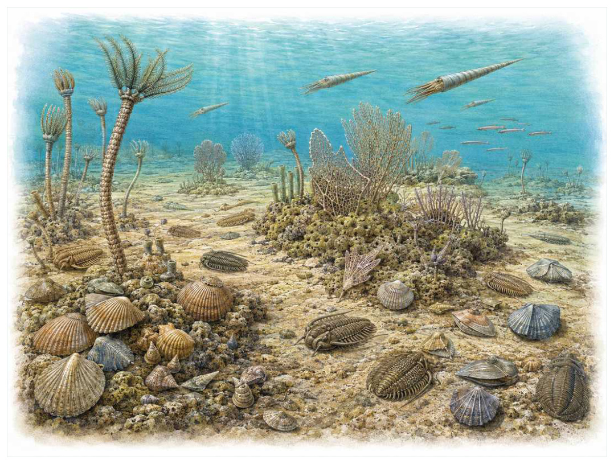
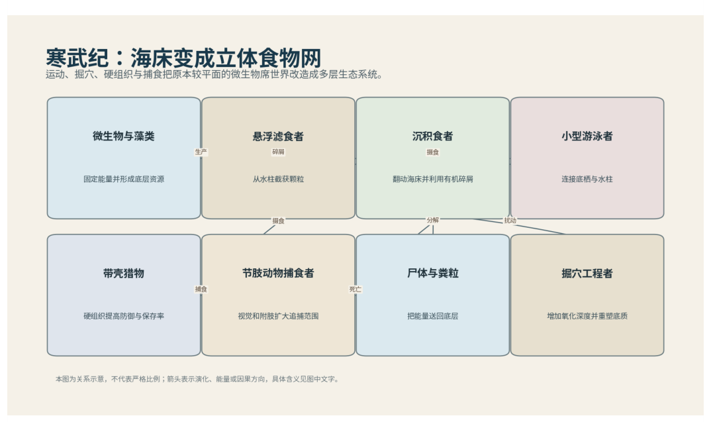

第05篇 · 奥陶纪：海洋生命第一次大繁荣 · 第 13 章
奥陶纪大辐射：海洋多样性为何再次跃升
本篇主题:奥陶纪：海洋生命第一次大繁荣
寒武纪之后的第二次多样化浪潮与更成熟的海洋生态系统。

本章科学复原配图 （用于呈现结构与生态关系, 不替代化石照片、测量数据与系统发育证据。）
把时间拨到约4.85亿至4.44亿年前。这一章不只列出当时的生物，而要追问环境、能量和生态关系怎样共同塑造身体。寒武纪建立了许多身体方案，奥陶纪则让这些方案在科、属和生态角色层面大规模扩张。浮游生物增多、海平面高、广阔浅海、气候逐步冷却和生态相互作用共同推动多样化。礁体、硬底和水柱都出现更细的空间分工。
进入这个时代
若真正置身其中，首先感受到的是介质本身：水是否含氧、地面是否稳定、空气是否干燥、植被是否遮挡视线。身体结构只有放在这些条件中才有意义。大陆大多被浅海覆盖。海底密布腕足动物、苔藓虫、海百合和海绵，水中漂浮笔石与微小浮游生物，直壳头足类在更高水层巡游。三叶虫仍常见，却不再独占大众想象中的海洋。
在“奥陶纪大辐射：海洋多样性为何再次跃升”所覆盖的时间里，不能把地理与气候当作固定背景。海陆位置、海平面、河流或植被结构会改变资源可达性，同一性状在不同地区可能得到完全相反的选择结果。
以奥陶纪大辐射：海洋多样性为何再次跃升为例，旧结构被重新利用是宏演化的常见路径。自然选择无法从零绘图，只能修改已有骨骼、膜、基因调控和生活史。后来承担新功能的结构，往往最初因完全不同的局部收益而扩散。 在本章中，这一约束具体落在“浮游食物增加支撑滤食者和游泳捕食者”这条关系上。
再从约4.85亿至4.44亿年前的时间尺度看，亲缘与外形不能混为一谈。相似身体可能来自共同祖先，也可能来自趋同；过渡类型也不是两类动物的机械拼接，而是当时能够正常摄食、运动和繁殖的完整生物。 它与“复杂礁生态”共同决定了后续变化可以沿哪些路径发生。

图 13-1 寒武纪食物网：运动、捕食和掘穴使海床立体化。
生态系统如何运转
本章的一条关键关系是“浮游食物增加支撑滤食者和游泳捕食者”。它首先改变资源在个体之间的分配：能更早发现、处理或占据资源的种群获得收益，而另一方会承受新的选择压力。
围绕“浮游食物增加支撑滤食者和游泳捕食者”，这种关系没有永恒赢家。收益随密度和环境改变：防御越常见，攻击专门化的价值越高；资源越稀少，维持昂贵结构的代价越大。化石记录中的扩张与衰退，常是这种动态平衡被外部事件打破的结果。对奥陶纪大辐射：海洋多样性为何再次跃升而言，这一后果还会与“礁体创造垂直结构和隐蔽空间”相互放大或抵消。
“礁体创造垂直结构和隐蔽空间”体现了生态系统的反馈性。一方结构或行为稍有改变，另一方的防御、逃避、繁殖和空间选择就会重新排列，长期累积后才形成宏观演化差异。
围绕“礁体创造垂直结构和隐蔽空间”，它的长期后果通常通过幼体和繁殖体现。成年个体即使能抵抗一次危机，只要巢址、配子、幼体食物或成长季节被破坏，种群仍会在数代内下降。 对奥陶纪大辐射：海洋多样性为何再次跃升而言，这一后果还会与“生态位细分使近缘类群在水深、底质和食物粒径上分化”相互放大或抵消。
在约4.85亿至4.44亿年前，“生态位细分使近缘类群在水深、底质和食物粒径上分化”把环境条件转化为生物之间的差异。相同气候并不会平均影响所有支系，因为它们利用的食物、水层、底质和繁殖地点并不相同。
围绕“生态位细分使近缘类群在水深、底质和食物粒径上分化”，还要考虑空间异质性。一项在浅海、河谷或林冠有效的策略，移到深水、干旱内陆或开阔地便可能失去优势。因此同一支系常出现区域性扩张，而不是全球同步取代。 对奥陶纪大辐射：海洋多样性为何再次跃升而言，这一后果还会与“浮游食物增加支撑滤食者和游泳捕食者”相互放大或抵消。
关键演化创新
在“奥陶纪大辐射：海洋多样性为何再次跃升”中，围绕“复杂礁生态”，“复杂礁生态”是本章的重要演化创新。创新并不等于某一代突然长出完整器官，它通常由旧结构的尺寸、连接、材料和表达时序逐步变化，并在每个中间阶段承担可用功能。它首先需要在约4.85亿至4.44亿年前的生态条件下产生可测量收益。
就“复杂礁生态”而言，研究者通过近缘支系比较、发育同源、关节活动、微观组织和出现顺序重建这条路径。真正有价值的过渡化石不是“半成品”，而是证明中间组合可以独立生活。 本章把它与“水柱生态扩张”并列，是为了显示复杂性状往往依赖多部分协同。
在“奥陶纪大辐射：海洋多样性为何再次跃升”中，围绕“水柱生态扩张”，这一结构的历史应按性状拆开。支撑、感觉、供能和控制往往不是同时成熟，化石会显示镶嵌状态：某一部分已接近后来的形态，其他部分仍保留祖征。它首先需要在约4.85亿至4.44亿年前的生态条件下产生可测量收益。
就“水柱生态扩张”而言，它的成功具有条件性。环境稳定时，专门化可提高效率；危机到来时，同一专门化可能限制食物和栖息地选择。演化创新因此既能开启辐射，也能制造新的脆弱性。 本章把它与“高阶捕食与滤食分层”并列，是为了显示复杂性状往往依赖多部分协同。
在“奥陶纪大辐射：海洋多样性为何再次跃升”中，围绕“高阶捕食与滤食分层”，“高阶捕食与滤食分层”是本章的重要演化创新。创新并不等于某一代突然长出完整器官，它通常由旧结构的尺寸、连接、材料和表达时序逐步变化，并在每个中间阶段承担可用功能。 它首先需要在约4.85亿至4.44亿年前的生态条件下产生可测量收益。
就“高阶捕食与滤食分层”而言，这一变化还可能在多个支系中独立发生。若功能相似而解剖来源不同，就是趋同；若结构来自共同祖先但功能改变，则属于同源结构的分化。二者不能仅靠外观判断。 本章把它与“复杂礁生态”并列，是为了显示复杂性状往往依赖多部分协同。
生命群像：把物种放回生态网络
正形贝（Orthida）
若把镜头从时代拉近到个体，正形贝（Orthida）会首先进入视野。它生活于奥陶纪繁盛，体型约厘米级。作为附着或躺卧海底的滤食者，它依靠铰合壳和触手冠代表古生代优势底栖滤食者与环境和其他生物发生关系。
对正形贝而言，它的成功不需要在所有性能上压倒其他物种，只需在特定资源和风险组合中留下更多后代。速度、咬合、装甲、感官与繁殖之间存在预算，某项性能极端化往往意味着另一项被牺牲。所谓“霸主”只是复杂权衡后的区域性结果。 这使“铰合壳和触手冠代表古生代优势底栖滤食者”不能脱离其附着或躺卧海底的滤食者角色来理解。
其复原依赖腕足动物外形像双壳类但两壳对称方式和亲缘完全不同。年代和保存形态通常属于较强证据，体重、速度、颜色和社会行为则需要额外假设。书中把这些层次拆开，是为了让读者知道哪些可视为事实，哪些仍应等待更多材料。
由正形贝这个案例看，它不是祖先链条上必须跨过的一格。演化树中同时存在许多近缘支系，只有少数留下后代；旁支化石同样关键，因为它们显示某组性状出现的顺序和可行范围。 它在奥陶纪繁盛留下的记录，因此同时是第13章所讨论的形态史和生态史的一部分。
链房苔藓虫（stony bryozoans）
链房苔藓虫（stony bryozoans）存在于奥陶纪大辐射。现有材料显示其大小约群体可达厘米至米级，生态位置接近礁体和硬底上的群体滤食者。模块化虫室构成枝状或块状群落，为微小动物提供空间让它成为理解本章主题的合适案例，但不意味着同一类群所有成员都采用相同策略。
对链房苔藓虫而言，从种群角度看，偶发捕猎和个体伤病远不如长期繁殖率重要。广泛分布的普通个体比一具异常巨大的标本更能代表支系，然而普通个体往往较少进入公众叙事。研究者必须防止把化石收藏偏好误当成古代丰度。 这使“模块化虫室构成枝状或块状群落，为微小动物提供空间”不能脱离其礁体和硬底上的群体滤食者角色来理解。
科学家并未直接看见它生活，依据是单个软体虫体少保存，生态主要由群体骨骼推断。现代类比可以帮助提出可检验模型，却不能取代化石；越具体的短时行为，越需要痕迹、内容物或重复病理等直接线索。
由链房苔藓虫这个案例看，这个案例还提醒我们，亲缘和生态角色是两件事。近亲可以因资源分化而外形迥异，远亲也能因相似压力而趋同。把它放在演化树和食物网两个坐标中，才不会误写成线性进步。 它在奥陶纪大辐射留下的记录，因此同时是第13章所讨论的形态史和生态史的一部分。
海林檎（cystoids）
在奥陶纪繁盛，海林檎（cystoids）以约厘米至十余厘米的身体参与食物网。它不是孤立的“明星生物”，而是固着海底滤食者；具板片包围的球状萼和柄，是已灭绝棘皮动物支系决定它能利用哪些资源，也决定必须承担哪些成本。
对海林檎而言，把它放回群落后，结构的意义更清楚。食物并不会平均分布，水深、植被高度、底质和季节把资源切成小块；它的身体让其中一部分资源可被利用，也使它与近缘种错开生态位。种群命运还取决于幼体能否成长、繁殖地点是否稳定以及灾害后是否仍有避难所。 这使“具板片包围的球状萼和柄，是已灭绝棘皮动物支系”不能脱离其固着海底滤食者角色来理解。
证据核心是不同类群的水流系统和摄食结构存在差异。化石记录更擅长回答“结构是什么”，较难回答“每天怎样行动”。足迹、胃内容物、咬痕或胚胎若存在，会显著缩小推测范围；若只有零散骨骼，行为叙述就必须更克制。
由海林檎这个案例看，它所代表的身体方案后来可能消失，也可能被远亲以不同材料重新发明。生命史因此既有可重复的功能解，也有不可复制的谱系路径。两者结合，才解释现代生物为何既熟悉又偶然。 它在奥陶纪繁盛留下的记录，因此同时是第13章所讨论的形态史和生态史的一部分。
直壳鹦鹉螺类（orthoceratoid cephalopods）
认识直壳鹦鹉螺类（orthoceratoid cephalopods）要先放弃静态骨架印象。它生活在奥陶纪至古生代，约从厘米到数米，日常任务是作为水柱中的游泳捕食者或食腐者维持能量与繁殖。分室外壳调节浮力，触手和喙部处理猎物只是这一整套生活史中最容易化石化的部分。
对直壳鹦鹉螺类而言，同域物种的存在迫使它分割时间与空间。相似牙齿不一定吃完全相同的食物，相似四肢也可能适应不同底质；微磨损、同位素和伴生群落常能揭示这种细分。环境改变时，原本减少竞争的专门化又可能成为迁移和改食的障碍。 这使“分室外壳调节浮力，触手和喙部处理猎物”不能脱离其水柱中的游泳捕食者或食腐者角色来理解。
判断它的生活方式时，研究者首先使用软体和姿态少保存，‘壳尖向前高速冲刺’式复原多已被修正。随后会检验替代解释：同样的牙是否也能处理其他食物，同样的骨骼比例是否由年龄造成，同一骨层是否来自群体生活还是灾难性聚集。排除过程比贴标签更重要。
由直壳鹦鹉螺类这个案例看，过去的复原常受完整现代动物模板影响，新材料则迫使研究者接受更陌生的身体比例或生活方式。最稳妥的表达是保留估计区间，并明确哪些软组织、颜色和社会行为仍属合理推测。 它在奥陶纪至古生代留下的记录，因此同时是第13章所讨论的形态史和生态史的一部分。
笔石（graptolites）
笔石（graptolites）生活在奥陶纪至志留纪，已知体型约为毫米至厘米级群体。它在群落中的角色可概括为海洋浮游或附着滤食群体。最值得观察的结构是快速演化和广布使其成为重要地层化石。这些结构不是为了后来时代而准备，而是在当时直接影响摄食、运动、防御或繁殖。
对笔石而言，它的成功不需要在所有性能上压倒其他物种，只需在特定资源和风险组合中留下更多后代。速度、咬合、装甲、感官与繁殖之间存在预算，某项性能极端化往往意味着另一项被牺牲。所谓“霸主”只是复杂权衡后的区域性结果。 这使“快速演化和广布使其成为重要地层化石”不能脱离其海洋浮游或附着滤食群体角色来理解。
关于它的直接依据是：群体生活姿态随类型不同，许多软组织细节依现生半索动物比较。研究者还必须确认骨骼是否属于同一个体、是否被水流搬运、压扁是否改变比例，以及不同大小是否只是成长阶段。只有解剖、地层和功能证据相互一致，复原才可上调为高可信。
由笔石这个案例看，它在生命史中的价值不在于离现代形态还有多远，而在于证明这一身体组合曾真实可行。即使没有直系后代，支系也可能在当时持续繁盛，并通过捕食、植食或栖息地工程改变其他生命的选择环境。 它在奥陶纪至志留纪留下的记录，因此同时是第13章所讨论的形态史和生态史的一部分。
因果链：环境、生态与性状
“浮游食物增加支撑滤食者和游泳捕食者”与“生态位细分使近缘类群在水深、底质和食物粒径上分化”之间常存在反馈。一个支系改变沉积、植被或猎物数量后，环境会对其自身和其他支系产生新的选择压力；短期收益可能导致长期资源下降，局部工程行为也可能创造此前不存在的栖息地。正形贝作为附着或躺卧海底的滤食者，海林檎作为固着海底滤食者，即使从不直接相遇，也可能经由这种环境改造联系起来。生态系统因此不是静态背景上的竞赛场，而是参与者不断修改规则的动态结构；这正是解释奥陶纪大辐射：海洋多样性为何再次跃升为何会留下长期后果的关键。
亲缘关系为功能解释设定边界。“高阶捕食与滤食分层”若在近缘支系中以不同程度出现，最简解释通常是祖先已具备部分结构，后代分别强化或丢失；若远亲在相似生态位中出现相近功能，则需要检查内部解剖是否来自不同材料。正形贝与海林檎可用于演示这一区分：外形近似不自动证明近缘，外形差异也不否定深层同源。把系统发育树、年代和生态证据叠在一起，才能判断奥陶纪大辐射：海洋多样性为何再次跃升中的相似究竟来自共同继承、趋同还是保留的原始特征。
从资源入口看，“浮游食物增加支撑滤食者和游泳捕食者”决定能量首先由谁获得，而“礁体创造垂直结构和隐蔽空间”决定能量随后怎样在群落中转移。只有当个体能够借助“复杂礁生态”把资源转化为生长或后代时，形态优势才会成为种群优势。正形贝与链房苔藓虫分别展示了这条链上的不同位置：前者的铰合壳和触手冠代表古生代优势底栖滤食者使其偏向附着或躺卧海底的滤食者，后者的模块化虫室构成枝状或块状群落，为微小动物提供空间则服务于礁体和硬底上的群体滤食者。这并不意味着二者必然直接竞争；更常见的情况是，它们通过共享资源、改变栖息地或影响共同捕食者而间接连接。把这种间接作用纳入，才看得见奥陶纪大辐射：海洋多样性为何再次跃升不是物种名单，而是一张持续重新分配能量的网络。
“生态位细分使近缘类群在水深、底质和食物粒径上分化”说明环境不是在所有个体身上平均施力。若一个种群分布广、世代较短或能使用多种资源，它可能把一次局部危机吸收到地理和生活史差异之中；若另一个种群依赖狭窄水深、单一植物或特定繁殖场，平时高效的专门化就可能在变化中放大风险。链房苔藓虫和海林檎的差异可以用来提出这种比较，但不能仅凭外形宣布谁更适应。真正需要的是地层连续性、地区分布、年龄结构和伴生群落共同告诉我们，哪些性状在奥陶纪大辐射：海洋多样性为何再次跃升的具体条件下转化成了更稳定的繁殖。
如果把奥陶纪大辐射：海洋多样性为何再次跃升当作一次自然实验，可以追问：假如“浮游食物增加支撑滤食者和游泳捕食者”较弱，“水柱生态扩张”是否仍会带来同样收益；假如“礁体创造垂直结构和隐蔽空间”更强，正形贝的铰合壳和触手冠代表古生代优势底栖滤食者是否反而成为负担。反事实无法直接验证，却能帮助研究者识别模型隐含的因果假设。随后再用全球化石数据库揭示多样性分阶段上升和稳定同位素记录海温变化寻找可区分的预测：不同机制应在体型分布、损伤类型、沉积环境或出现顺序上留下不同痕迹。科学解释不是为现有图景编一个顺耳故事，而是让相互竞争的解释接受同一批材料检验。
时代横截面：个体、种群与证据
把正形贝与链房苔藓虫并排观察，可以看到同一时代并不存在唯一正确的身体方案。正形贝以铰合壳和触手冠代表古生代优势底栖滤食者参与附着或躺卧海底的滤食者，链房苔藓虫则依靠模块化虫室构成枝状或块状群落，为微小动物提供空间承担礁体和硬底上的群体滤食者；两者可能在食物尺寸、活动空间或时间上错开，从而降低直接竞争。若环境改变使这些维度重新重叠，原先共存的支系才可能发生更强替代。比较的目的不是判断谁更先进，而是识别每套结构在哪些条件下有效、在哪些条件下暴露成本。
尺度转换是奥陶纪大辐射：海洋多样性为何再次跃升最容易被忽略的问题。正形贝的一次摄食、一次移动或一次繁殖属于分钟到季节尺度；种群扩张需要数百至数万年；“复杂礁生态”在演化树上的固定则可能跨越更久。短期观察能够说明结构怎样工作，却不能单独解释支系为何在约4.85亿至4.44亿年前扩张。反之，宏观多样性曲线能显示替换，却不能指出每次选择发生在什么身体和生活阶段。把尺度接起来，因果链才完整。
从失败的替代解释出发，能够看见研究如何推进。若把正形贝简单解释为附着或躺卧海底的滤食者，就应检查其铰合壳和触手冠代表古生代优势底栖滤食者是否真的适合该功能；若另一种功能同样可行，再看磨损、同位素、沉积环境或共存生物能否区分。链房苔藓虫与海林檎提供了比较基线，帮助判断某一结构是普遍祖征、特殊适应还是成长阶段差异。结论不是从外观直觉跳出，而是在一系列被排除的可能性之后留下。
本章还可以作为灭绝选择性的预演。若危机首先削弱“浮游食物增加支撑滤食者和游泳捕食者”，依赖该环节的正形贝可能比外形更脆弱但食物广泛的链房苔藓虫更早衰退；若危机破坏的是繁殖场或幼体环境，成年体型和武器几乎不能提供保护。分布范围、成熟速度、休眠能力与食谱因此要和铰合壳和触手冠代表古生代优势底栖滤食者、模块化虫室构成枝状或块状群落，为微小动物提供空间等显眼结构一起评估。危机筛选的是整套生活史，而不是单项竞技能力。
从保存角度看，正形贝和链房苔藓虫也可能被化石记录不公平地对待。正形贝的铰合壳和触手冠代表古生代优势底栖滤食者若包含坚硬、容易辨认的部分，就更可能被采集和命名；链房苔藓虫若身体柔软、个体小或生活在侵蚀环境，真实丰度可能被严重低估。全球化石数据库揭示多样性分阶段上升能补充一部分信息，稳定同位素记录海温变化又提供另一尺度的限制。只有先问“什么容易被保存”，再问“什么当时常见”，才不会把博物馆展柜的比例误当成古生态比例。
科学家为什么这样判断
证据条目“全球化石数据库揭示多样性分阶段上升”的作用，是把肉眼可见的化石转化为可检验结论。研究者先确认样品的层位和成岩历史，再测量结构、比较近缘种并建立替代模型；若解释只在一套参数下成立，就不能写成唯一事实。
使用“稳定同位素记录海温变化”时必须处理保存偏差。坚硬组织、低氧埋藏和火山灰覆盖更容易留下记录，岩层出露与采集历史又决定样本数量。统计分析通常要校正这些不均匀性，避免把采样强度当作真实多样性。
围绕“不同保存环境校正采样偏差”，高可信结论通常来自独立方法一致。例如形态暗示某种食性时，微磨损、同位素或胃内容物若给出相同方向，解释便更稳固；若结果冲突，就应保留生态弹性或地区差异。
在“奥陶纪大辐射：海洋多样性为何再次跃升”这一问题上，把上述方法合在一起，研究者才能从残缺材料走向受约束的复原。任何一条证据都可能受到成岩、污染、样本量或现代类比的限制；结论越具体，越需要多条独立证据指向同一方向，并与约4.85亿至4.44亿年前的地层背景相容。
过去的图景与今天的证据
GOBE不是一次全球完全同步的单峰事件。不同海域、类群和生态功能的多样化时间不一，部分‘突然’来自岩石出露和采样差异。更准确的图景是持续数千万年的级联辐射。
围绕“奥陶纪大辐射：海洋多样性为何再次跃升”，这里的争论并非一方相信科学、另一方拒绝科学，而是不同材料对模型的约束力度不同。旧结论可能建立在少量标本或错误现代类比上，新技术增加性状后会改变最合理解释。修正是研究正常运行的结果。
对约4.85亿至4.44亿年前的材料而言，旧复原并不总是彻底错误。它可能正确抓住亲缘或基本功能，却在姿势、比例和生态上被新标本修订。比较“过去认为”和“现在更支持”，能看见证据如何逐层替换想象。
跨尺度观察
能量账本：任何大型身体、快速运动或高代谢都必须由初级生产支撑。食物从生产者进入消费者时会损失大量能量，因此顶级捕食者种群必然远少于猎物。环境变化若先削弱生产端，高营养级通常最早出现繁殖失败；这比单次搏斗更能决定支系命运。在“奥陶纪大辐射：海洋多样性为何再次跃升”中，这一尺度具体连接了“浮游食物增加支撑滤食者和游泳捕食者”与“复杂礁生态”，因而不能只从单个成年标本判断。
偶然与必然：流体力学、材料强度和能量转换使某些功能解反复出现，显示演化有可预测部分；但由哪一支系先获得变异、谁恰好位于避难地，又带有不可复制的历史偶然。现代世界是二者叠加的结果。在“奥陶纪大辐射：海洋多样性为何再次跃升”中，这一尺度具体连接了“礁体创造垂直结构和隐蔽空间”与“水柱生态扩张”，因而不能只从单个成年标本判断。
证据等级：地层年代和硬组织形态通常最强，食性若有多种独立线索可达主流解释，颜色、群居、求偶和叫声则常停留在合理推测。把等级写清并不会破坏画面，反而让读者知道想象可以走到哪里。在“奥陶纪大辐射：海洋多样性为何再次跃升”中，这一尺度具体连接了“生态位细分使近缘类群在水深、底质和食物粒径上分化”与“高阶捕食与滤食分层”，因而不能只从单个成年标本判断。
通向下一个时代
从本章走向下一阶段时，需要保留的不是一串物种名，而是一个因果链：环境改变可用能量与栖息地，生态关系筛选性状，性状又反过来改造环境。多样化海洋也更依赖复杂食物网。下一章将进入礁体和水柱，观察头足类、笔石和棘皮动物怎样改变海洋结构。
本章精选来源
- [R31] Servais, T. et al. The Great Ordovician Biodiversification Event (GOBE): the palaeoecological dimension. Palaeogeography, Palaeoclimatology, Palaeoecology 294, 99-119 (2010).
- [R32] Harper, D. A. T., Hammarlund, E. U. & Rasmussen, C. M. Ø. End Ordovician extinctions: a coincidence of causes. Gondwana Research 25, 1294-1307 (2014).
- [R33] Benton, M. J. & Harper, D. A. T. Introduction to Paleobiology and the Fossil Record, 2nd ed. Wiley Blackwell, 2020.